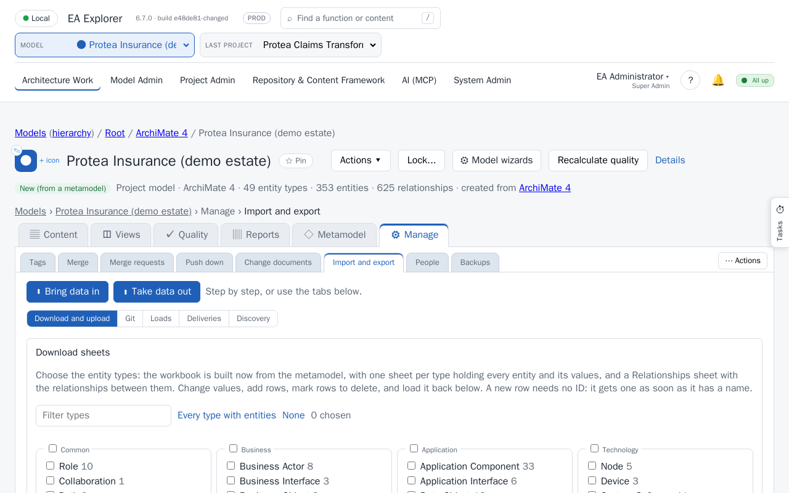

Decline a delivery
For: Model Admin, Practising architects
Send a delivery back so nothing of it loads.

#/metamodel/{m}/importWhy do this
Declining is the safety valve of automated data: when a delivery is wrong, nothing of it reaches the model, and the reason goes back so the sending system can fix it and send again. See Data in and out: integration.
Every route in ends the same way: what arrives is shown as new, changed, kept and problem rows, and a person decides. That review is what lets you automate feeds without losing control of the model.
In TOGAF terms: Supports the content of phases B, C and D (baseline architectures), keeping the Architecture Landscape current from the systems that already know it. See EA Explorer and the TOGAF Standard.
The goal: A wrong delivery is sent back and nothing of it loads.
Before you start You need Committer, Model Sub Admin or Model Admin on the model.
Steps
- Open the delivery.
- Decline: give the reason (the source sends a corrected file).
- Confirm.